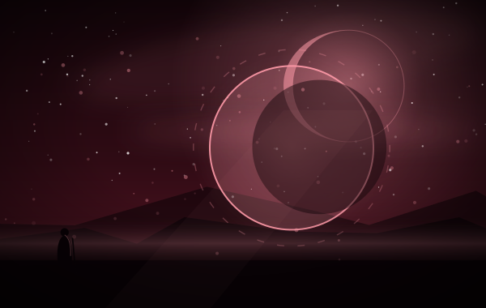

同盟军 › 斯卡琳编组
十张，主线是绯红转化链与红月四式。绯红的真实 18 费，要先用过五张红月才肯进手。绯红灵究与绯红极限各自抽魔法、减费，是这条链的续航。
英雄：斯卡琳 五张红月，一张真实
类别：魔法 · 收藏上限 1
标签（归档者归纳，含规则词条）
释义照录规则原文；标注「归档注」的是归档者补的说明。
7 费，+3 魔力上限，【限定】，「开发」一张『红月』——开发是从三张额外的牌里选一张，属于生成。若已觉醒，还会随即将一张『红月』加入手牌。它是红月体系的终点，也是目前唯一能靠转化在卡组里凑出第二张的牌。
——归档者，读这张卡的时候
红月 整套红月牌都以「月」计数：凝刻、无限、过载、凝聚，四式都要先有过月，才肯付账。红月是只在史书之外出现的东西——牌桌把它做成了资源名，而不是背景。
这是归档者读牌时的对应关系，不是原典设定。